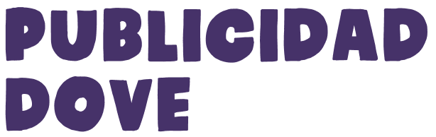

Realicé la edición de un video de campaña inspirado en el estilo comunicacional de Dove, manteniendo su enfoque en la belleza real, la autenticidad y el mensaje emocional. Busqué construir una narrativa honesta y cercana, alineada con la identidad de la marca. La edición prioriza los textos, tiempos pausados y una estética simple que refuerza el mensaje sin distraer, demostrando cómo el montaje puede potenciar el storytelling y la conexión emocional con el público.